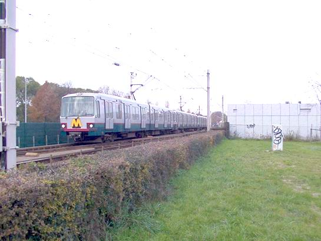

Zomerweer heeft invloed op metrodienstregeling...
- woensdag 10 december 2008 21:38
- Geschreven door Joachim
Door het warme weer wordt de laatste paar dagen de metrodienst gebrekkig uitgevoerd. Zo ook gisteren. Door de warmte raakte de signalering van slag nabij wisselcomplex Prinsenlaan. Daardoor kwamen er valse bezetmeldingen in het spoor te staan. Metrosneltrams moesten daarom met een snelheid van 10 km/h het wisselcomplex(zowel spoor 1 als 2) passeren, en waar nodig opnieuw inschakelen om een positievere signalering te ontvangen. Een ploeg van S&T Infra was ter plaatse om het wisselcomplex en de signalering daarvan te inspecteren.
Doordat de aanvraag van het AHOB-systeem van de Prins Constantijnweg ter hoogte van het wisselcomplex Prinsenlaan ligt, duurde het door de langzame snelheid van de metrosneltrams op het wisselcomplex, lang voordat ze daadwerkelijk kruising Prins Constantijnweg bereikten. Het verkeer reed ter plaatse zigzaggend tussen de slagbomen door. Na enkele malen ging de kruising nog een keer in de reset, en kon het verkeer weer normaal doorrijden. De metrosneltrams moesten dan gebruik maken van de tweede aanvraaglus, vlak naast het ATS-sein(AHOB Toestand Sein).

Wisselcomplex Prinsenlaan, waar deze sneltram vorig jaar herfst 70 km/h rijdt. Gisteren even niet: door de valse bezetmeldingen kon er maximaal met 10 km/h gereden worden...
Hoofdweg
Ook de verkeerslichtinstallatie aan de Hoofdweg had last van de warmte. De eerste aanvraag van het geheel verviel, hierdoor moesten metrosneltrams noodgedwongen remmen, om een tweede aanvraag vlak voor het negenoog, mogelijk te maken. dS+V(dienst Stedelijk+Verkeer) heeft na ongeveer een uur de aanvraagsessie hersteld.
5253
Rijtuig 5253 kampte gisteren met een omvormerstoring, daarom werd het rijtuig op Blaak spoor 3 geparkeerd, totdat deze naar het depot kon vertrekken.
"Aan de noodrem trekken hielp niet; we konden nergens heen"
Het veiligheidsprotocol van de RET is onlangs in twijfel getrokken. Dit naar aanleiding van rookontwikkeling in een metrostel ter hoogte van station Tussenwater. De rookontwikkeling was de oorzaak van kortsluiting na een defecte stroomafnemer. Diverse reizigers trokken bij station Tussenwater al aan de noodrem, echter daar werd geen gehoor aan gegeven door de bestuurder, die de eindverantwoordelijkheid heeft voor een te maken noodremming.
De procedure is dat een metro naar het volgende station doorrijdt nadat er aan de noodrem is getrokken, omdat een station voor de hulpdiensten beter te bereiken is dan een viaduct of tunnel. Een van de reizigsters, M. Bijl, die in de metrotrein zat waar de rook zich ontwikkelde, realiseert zich dat er van alles had kunnen gebeuren tijdens de rit, die eindigde op station Pernis.
Bijl vindt dat de bestuurder via de intercom had kunnen melden dat de metro door zou rijden naar het volgende station. Volgens de RET is dit gebeurd en is volgens de spoorwegwetgeving en voorschriften van de RET zelf gehandeld, al weet reiziger Bijl zeker dat er helemaal niets gemeld is via de intercom. Volgens haar waren het angstige momenten voor de reizigers in het achterste metrostel, dat zich compleet vulde met rook.
Blijkbaar begon het al bij station Zalmplaat, alwaar de metro lang stilstond. Bijl: "Al bij Zalmplaat was er wat aan de hand, stond de metro lang stil. Had volgens mij te maken met de werkzaamheden verderop aan het metrospoor. Vlakbij Tussenwater gebaarden mensen langs het spoor dat de metro moest stoppen. Hij reed door. Toen hoorden we een enorm kabaal, alsof iets tegen de bodemplaat schuurde. Vanaf dat moment ging het goed mis.''
Reizigster Bijl raadt de RET aan mensen te informeren wanneer ten behoeve van de veiligheid doorgereden wordt naar het volgende station, om zo paniek en chaos te voorkomen.
Vrij naar: "Veiligheidsprotocol RET in twijfel getrokken" (Rotterdams Dagblad, 8 juni 2004).